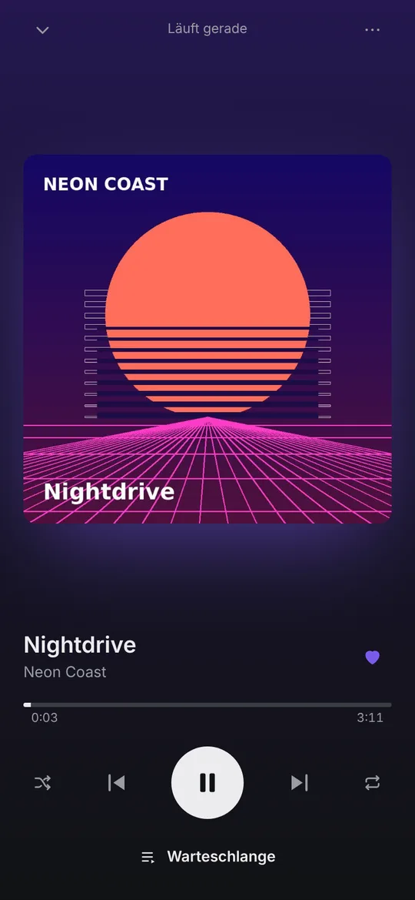
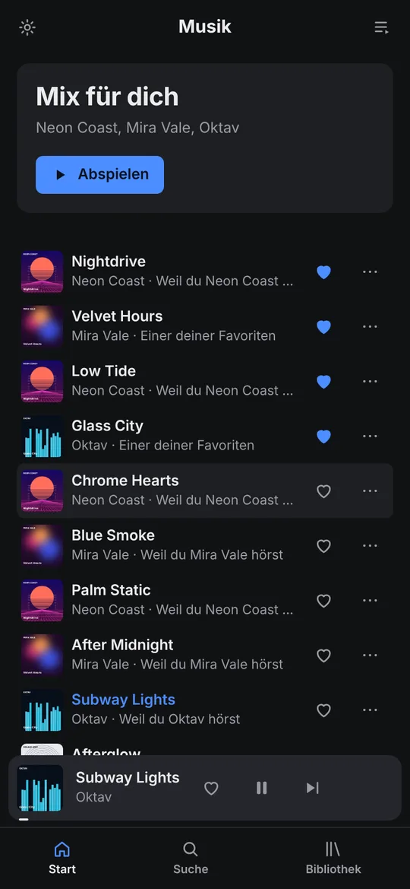
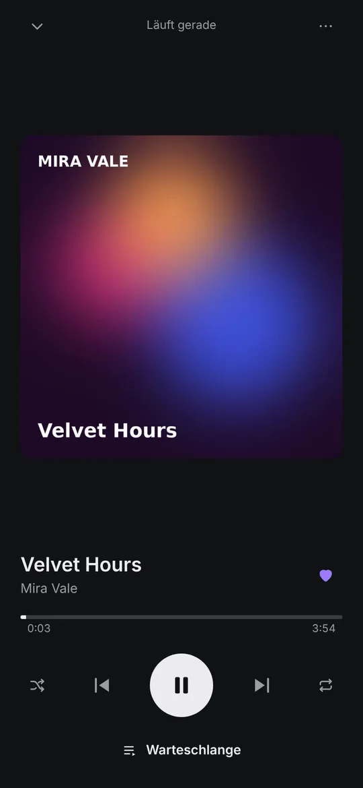
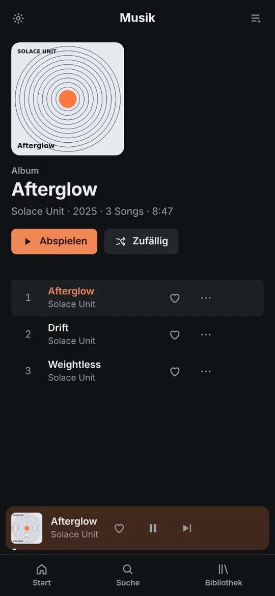
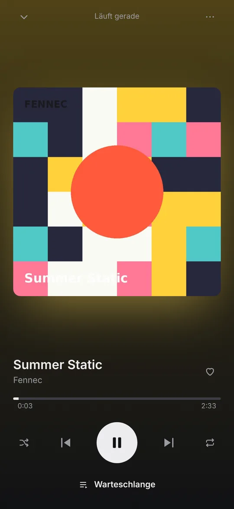
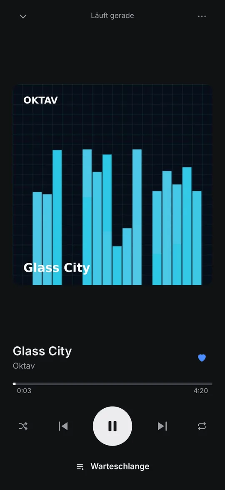
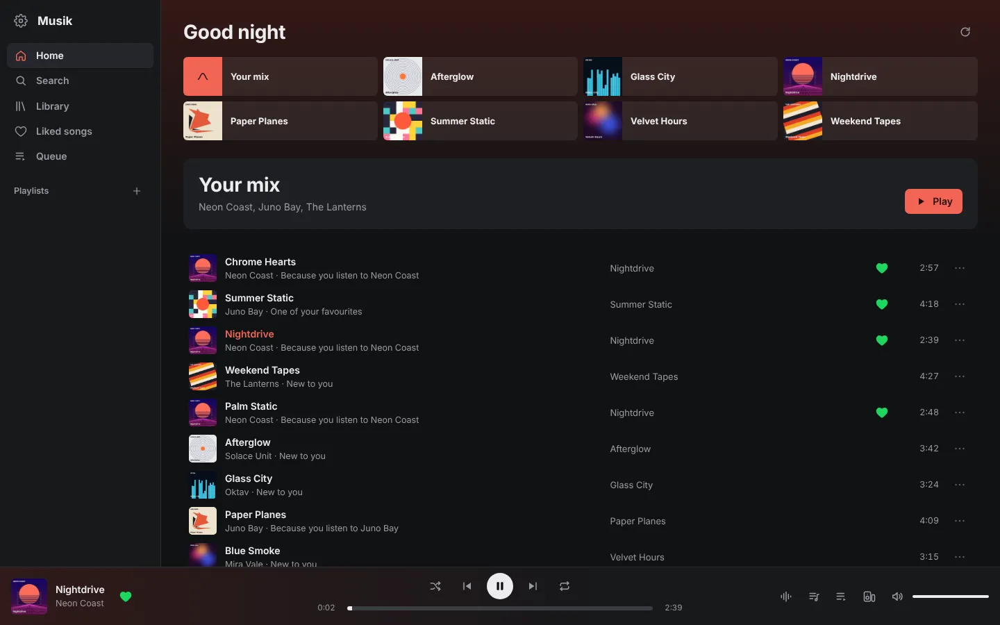
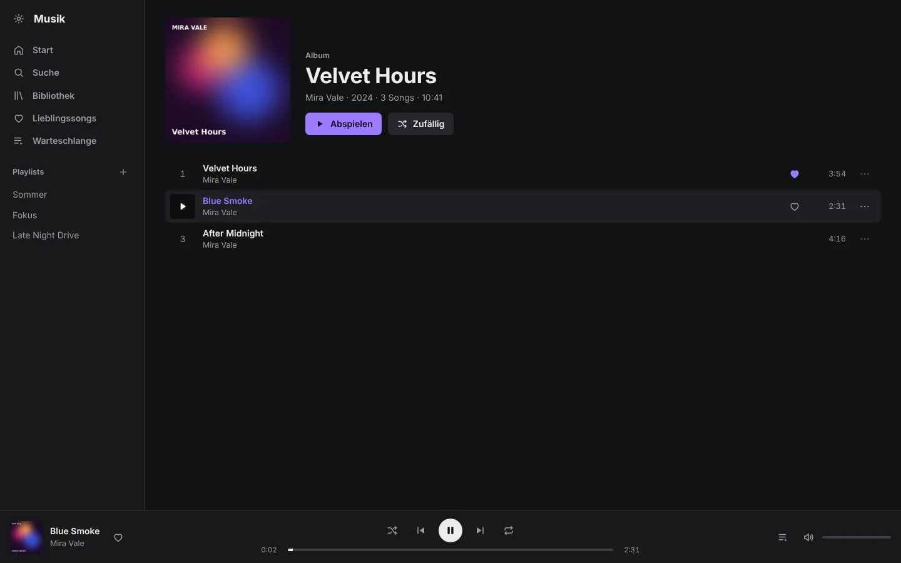
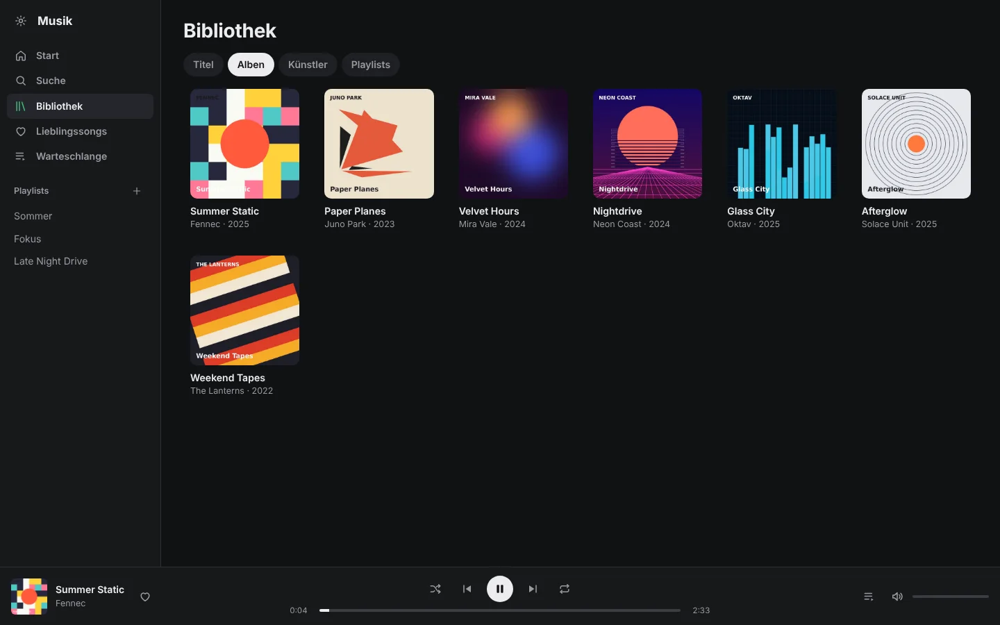

# bash -c "$(curl -fsSL https://raw.githubusercontent.com/Labtoso/Musik/main/deploy/proxmox.sh)" ==> Creating container 120 (Debian 12) ==> Installing Musik server ==> Done http://192.168.1.50:8484
$ curl -fsSL https://raw.githubusercontent.com/Labtoso/Musik/main/deploy/install.sh | sudo bash
$ git clone https://github.com/Labtoso/Musik.git && cd Musik && docker compose up -d --build
> .\musik-server-windows-x64.exe